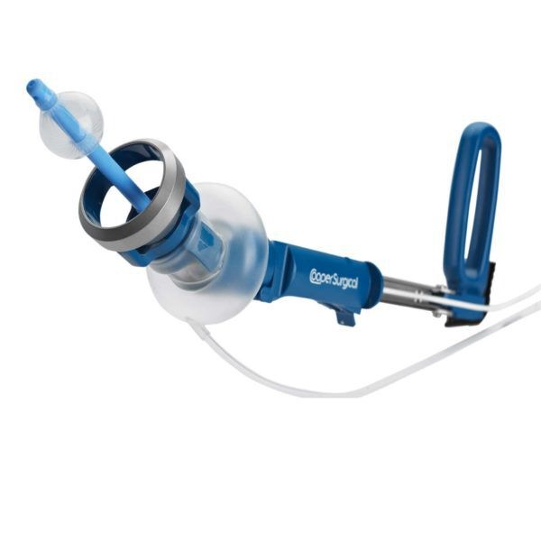

RUMI® II System
CooperSurgical의 140도 관절 자궁 조작 시스템으로 골반 복강경 수술 시야를 극대화합니다.
RUMI® II System
Advanced Uterine Manipulation System
모든 골반 복강경 시술을 위한 최적의 선택.
탁월한 가시성과 정밀한 자궁 조작으로 수술의 완성도를 높입니다.

자궁 조작의 새로운 기준
RUMI II System은 복강경 수술 중 탁월한 자궁 노출과 골반 접근성을 제공하도록 설계된 고급 자궁 조작 시스템입니다. 다양한 일회용 자궁내 팁과 140도 관절 운동으로 환자 개인의 해부학적 구조에 맞춘 최적의 시술이 가능합니다.
140° 관절 운동
자궁 경부에서 전굴 90°, 후굴 50° 구현. 해부학적 구조에 맞는 탁월한 노출과 접근성을 제공합니다.
마찰 없는 잠금 핸들
팁 방향과 자궁 위치를 안정적으로 유지. 절제 중 추가적인 수술 제어와 안전성을 보장합니다.
6가지 팁 사이즈
5.1mm ~ 6.7mm, 3.75cm ~ 12cm 범위로 다양한 환자 해부학에 맞는 최적의 팁을 선택할 수 있습니다.
광범위한 적응증
진단적 복강경, 근종절제술, 자궁절제술, 자궁내막증 절제, 천골질고정술 등 다양한 시술에 적용됩니다.
RUMI II만의 차별화된 설계
- 기존 대비 2인치 더 긴 샤프트로 더 나은 접근성 확보
- 식염수 주입식 실리콘 풍선 팁 — 삽입 시 외상 최소화, 안정적 고정
- 새로운 카테터 관리 시스템 내장으로 수술 현장 정리 향상
- 시각·청각 잠금 표시 기능 — Koh-Efficient 장착 확인
- Latex Free 설계
- 천골질고정술·천골자궁고정술 전용 팁 별도 제공
- RUMI, RUMI Arch 핸들 모두와 팁 호환
Koh-Efficient™ 시스템
KOH Cup과 공기차단 풍선을 하나로 통합한 Koh-Efficient는 RUMI II 핸들에 신속·정확하게 장착되어 TLH(전복강경 자궁절제술)를 더욱 쉽고 빠르고 안전하게 만들어 줍니다.
안전한 절개 마진 확보
요관과의 안전 거리를 유지하면서 질 원개를 신장시켜 정확한 질원개 절개가 가능합니다. 수술 중 신뢰감 있는 진행을 보장합니다.
4가지 사이즈
2.5cm / 3.0cm / 3.5cm / 4.0cm — Cervical Sizer로 환자에게 맞는 크기를 정확히 측정 후 선택할 수 있습니다.
간편 장착 (Easy Load)
광범위한 테스트와 외과의 피드백을 반영한 장착 메커니즘으로 빠르고 정확한 위치 결정이 가능합니다.
RUMI Arch II 호환
RUMI II 핸들 및 RUMI Arch II 핸들에 모두 적용 가능. 단, 구형 RUMI 및 RUMI Arch 핸들과는 호환되지 않습니다.
RUMI II 팁 규격
6가지 사이즈로 다양한 환자 해부학에 최적화된 팁을 선택할 수 있습니다.
주요 제품 코드
| 제품 코드 | 제품명 | 수량 |
|---|---|---|
| UMH650 | RUMI II Handle (자궁 조작기 핸들) | 1개 |
| UMH750 | RUMI Arch II Handle | 1개 |
| KC-RUMI-25~40 | RUMI II / Koh-Efficient (2.5~4.0cm) | 5개/box |
| KC-ARCH-25~40 | RUMI Arch II / Koh-Efficient (2.5~4.0cm) | 5개/box |
| KC-SIZER | Cervical Sizer | 1개 |
| SACRO-1 | Sacrocolpopexy Tip - Large | 3개/box |
| 371550-03 | Uterine Positioning System (UPS) | 1식 |
※ 정확한 재고 및 납기 문의는 준메디칼 영업팀으로 연락 주시기 바랍니다.
※ All RUMI Products are Latex Free. / 제조사: CooperSurgical, Inc. (USA)